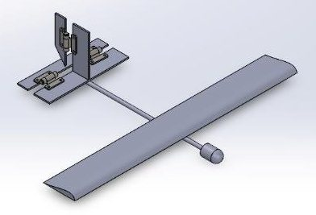
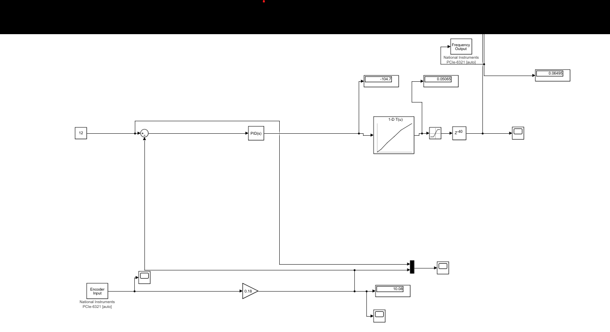
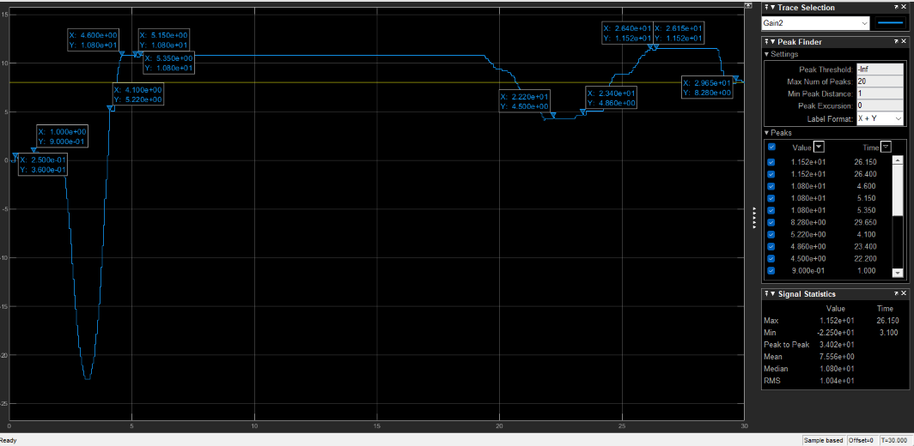

Closed-Loop PID Analysis of a 2-DOF Tailplane
Summary
What
Open-loop tailplane data fed into a Simulink closed-loop model whose PID controller is tuned with the frequency-response autotuner.
Role
Recorded open-loop tailplane data, built a Simulink closed-loop model and tuned its PID with the frequency-response autotuner at three rudder inputs, in a team of 4.
Results
- Autotuned PID loop tested at 8, 10 and 12 degree rudder inputs.
- At 8 degrees: about 10 percent overshoot and settling within 26 s.
- At 10 degrees: 63 percent overshoot and about 16.6 s settling, so it needed more tuning.


Problem
Evaluate how well a PID controller regulates the yaw angle of a 2-DOF aircraft tailplane in response to rudder yaw commands, compared with the open-loop system.
Method
- Open loop: applied rudder yaw values, recorded the tailplane output angles and logged them to Excel.
- Closed loop: used the recorded data in a Simulink closed-loop model with a PID controller. Gains came from the Simulink Frequency Response Based PID Tuner, which perturbs the plant with sine and step signals, estimates its frequency response and DC gain, and tunes to a target bandwidth and phase margin.
- Compared responses at 8, 10 and 12 degree rudder inputs by rise time, overshoot, settling time and steady-state error.


Results
At 8 degrees the rise time is under 5 s, overshoot about 10 percent, settling within 26 s and steady-state error 0.6 units. At 10 degrees the rise time is about 5 s, overshoot 63 percent, settling about 16.6 s and steady-state error minimal. At 12 degrees the rise time is about 1 s, with significant overshoot and oscillation, settling after 6.3 s and steady-state error 0.1 units.


Limitations
- Simulation only, and the autotuned controller is not claimed to be optimal.
- The 8 degree case needed only minor adjustments. The 10 and 12 degree cases need further tuning.
Tools
- Simulink
- MATLAB
- Excel